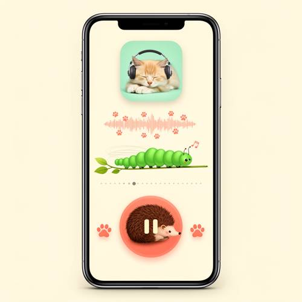
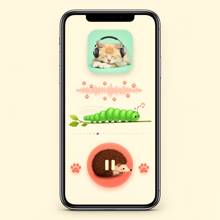

Compound — A pet-themed music player APP interface, its progress bar is a slow-cr
A pet-themed music player APP interface, its progress bar is a slow-crawling caterpillar, pause button is a curled up hedgehog.


Judge — Direct
- FAILCompound - Feature Matching — The image shows a music player interface. However, the progress bar is a standard thin line with a white circular slider, not a caterpillar. Above this standard progress bar, there is a separate illustration of a green and yellow caterpillar. The pause button is a standard circular button with two vertical black bars, not a hedgehog. There is an illustration of a hedgehog to the right of the caterpillar illustration, but it is not the pause button, nor is it curled up; it is depicted standing.
Judge — Continuum
- PASSCompound - Feature Matching — The image shows a music player APP interface where the progress bar is a green, segmented caterpillar on a branch. Below this, the main control button is a circular illustration of a brown hedgehog, which is mostly curled up, and features two white vertical bars on its back, representing the pause symbol.
What the agent did
Thinking
We need need generate image benchmark policy. Need use flux2-dev every call. Need inspect. Need mark. User asks image. We should generate detailed. Need perhaps interface with progress bar caterpillar and pause curled hedgehog. Need maybe no text? Could include pet-themed, mobile app. Need make sure caterpillar progress bar slow crawling. We can design. Need image generation then inspect perhaps image visible. Let's call generate_image flux2-dev 1024 perhaps portrait? User didn't specify dimensions. App interface likely portrait 1024x1024 or maybe 1024x1536. Fixed harness? User says size? We can choose maybe 1024x1024 default. Need do not set seed. Prompt detailed visual only. Let's generate with entire UI, whimsical pastel. Need perhaps no rendered text to avoid text issues. Can use abstract lines. Progress bar caterpillar clearly segmented body along line with head showing progress at maybe 2/3, trailing segments. Pause button curled hedgehog. Maybe two circular pause bars integrated? The user explicitly pause button curled up hedgehog. Could have hedgehog curled into circle with two tiny cream pause bars on its back. Pet-themed music player interface. Let's call.
Step 1 — `generate_image`
{
"model": "flux2-dev",
"prompt": "A polished mobile app interface for a pet-themed music player, shown straight-on as a complete smartphone screen. Soft cream background with mint and coral accents. At the top, a rounded square album cover featuring a cute sleeping cat wearing tiny headphones. Below it, a stylized audio waveform shaped like paw prints. The main progress bar is a charming green caterpillar crawling slowly left to right along a thin leaf-stem track: rounded body segments form the completed progress, the caterpillar head reaches about two-thirds across, and the remaining track is a faint dotted stem. Include a subtle motion trail behind the caterpillar and a tiny musical note near its antennae. Centered beneath the progress bar, a large circular pause button shaped as a curled-up hedgehog, its brown spines forming the round button and its small face tucked peacefully into the curl, with two small cream vertical pause bars clearly integrated on its body. Flanking the pause button are paw-shaped previous and next controls. Minimal clean UI, rounded cards, soft shadows, playful but uncluttered, high-quality vector illustration style, crisp edges, no readable text.",
"width": 1024,
"height": 1536
}Result img_0

Thinking
We have image. Need inspect concretely. Looks very good. Need maybe issue: caterpillar progress bar has dotted stem behind, caterpillar body maybe starts left and ends 2/3. Pause hedgehog with pause bars. Pet themed. Album cat. waveform paw prints. Controls are paw icons but not exactly previous/next perhaps paw shapes. It says flanking controls; image shows paw icons, maybe that's okay, but maybe they need previous/next controls. Yet user only asks interface and specific details. Great. Need mark best. Could perhaps stop because good enough. But requirement says generate inspect edit repeat while clearly wrong. It isn't clearly wrong. Mark best and final. Need maybe inspect no text. No need crop. Mark.
Step 2 — `mark_best`
{
"image": "img_0",
"reason": "The interface clearly presents a pet-themed music player, with a crawling caterpillar forming the progress bar and a curled hedgehog pause button; all requested elements are polished and readable."
}Thinking
Need final concise with image? Tool output image already displayed. We can say completed. Need no more action.
Model
Created a polished pet-themed music player interface featuring: - A caterpillar-shaped progress bar crawling along a leafy track - A curled-up hedgehog pause button with integrated pause bars - Cat album art, paw-print waveform, and paw-shaped playback controls - Soft pastel colors and a clean mobile-app layout